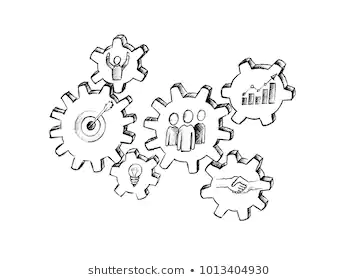
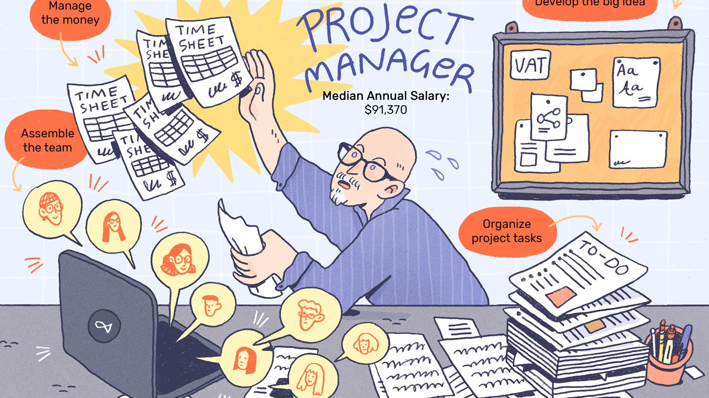
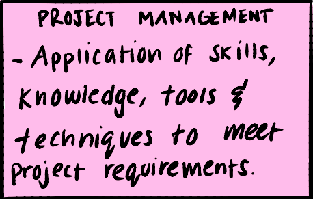
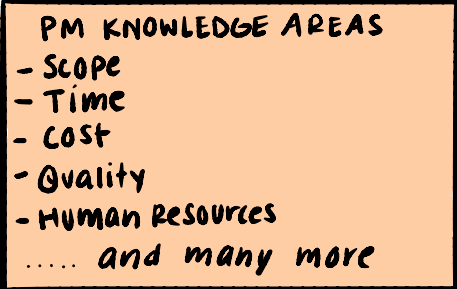
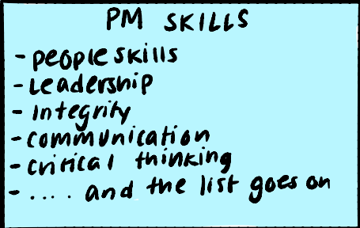
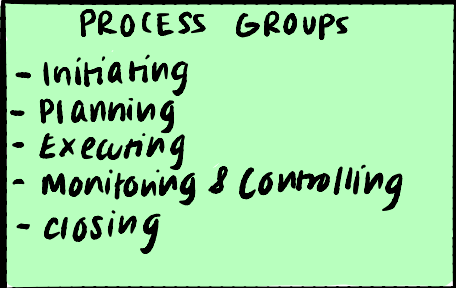
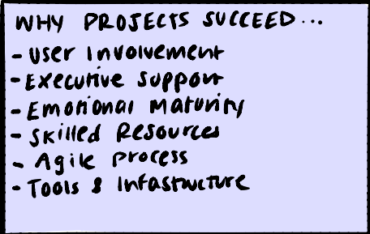
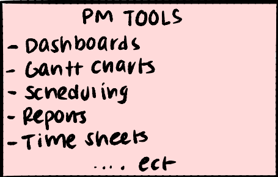

PROJECT MANAGEMENT
What is Project Management?


More specifically, what is a project? It's a temporary endeavor undertaken to create a unique product, service or result.
A project is temporary in that it has a defined beginning and end in time, and therefore defined scope and resources.
And a project is unique in that it is not a routine operation, but a specific set of operations designed to accomplish a singular goal. So a project team often includes people who don’t usually work together – sometimes from different organizations and across multiple geographies.
The development of software for an improved business process, the construction of a building or bridge, the relief effort after a natural disaster, the expansion of sales into a new geographic market — all are projects.
And all must be expertly managed to deliver the on-time, on-budget results, learning and integration that organizations need.
Project management, then, is the application of knowledge, skills, tools, and techniques to project activities to meet the project requirements.
This website will tell you about some common project management methodologies, process groups, and different tools that Project Managers use.
You can also fill out the form to get more information and give your feedback on this website. There is also an image gallery you can look through!
>here< is a link to a novel that can show some of the challenges Project Managers go through. It is a really
fun and interesting read so if you are interested in project management I reccomend checking it out!
GALLERY

Project Management

Knowledge Areas

Project Manager Skills

Process Groups

Why Projects Succeed

Project Management Tools